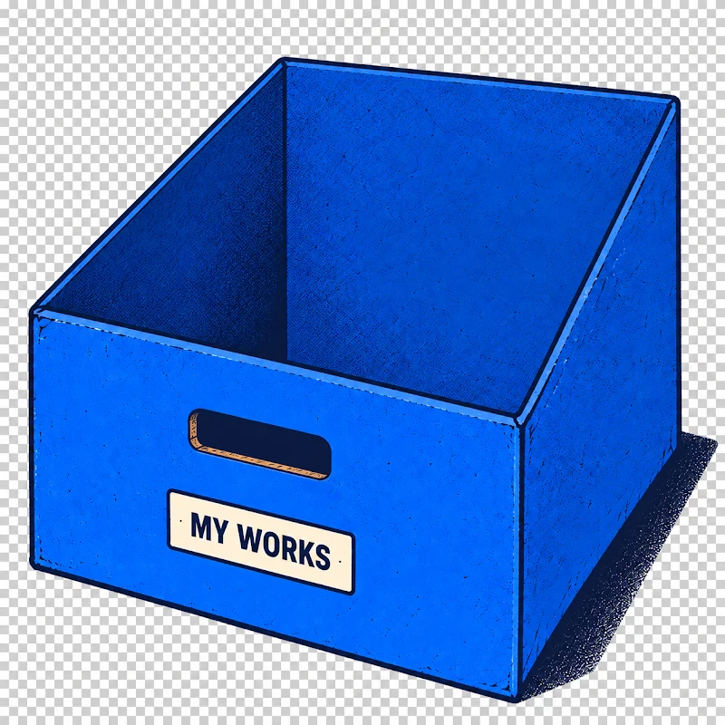

Projects I’ve worked on
A collection of thoughtful work, problem-solving, and details made to last.

My process
Understand the problem. Build the simplest thing that works. Measure it.
-
01 / UNDERSTAND
Start with the right questions.
Figure out who it’s for, what’s slow or broken, and what success looks like.
Problem before code. -
02 / BUILD
Ship the simplest thing that works.
Pick the right tools, build a working version, and keep it tested.
Prototype → Production -
03 / MEASURE
Measure it. Then make it better.
Benchmark, evaluate, harden, and iterate on what the numbers say.
Test. Learn. Refine.
Work with me
Have a project in mind? Let’s talk.